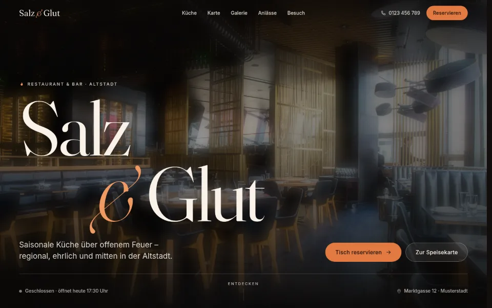
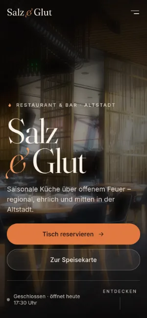
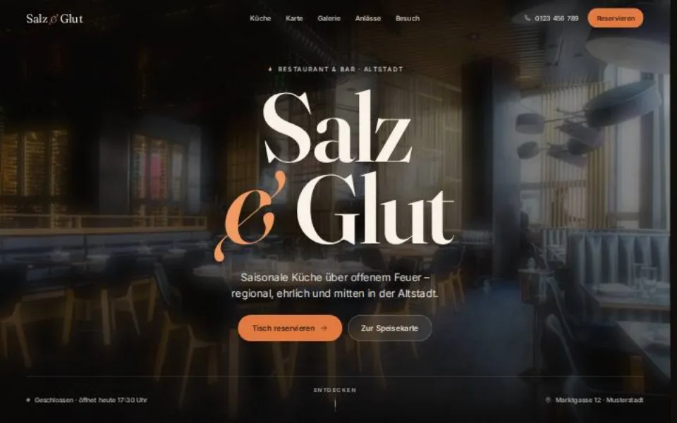
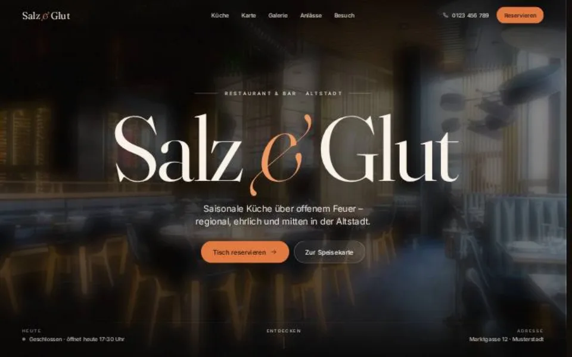
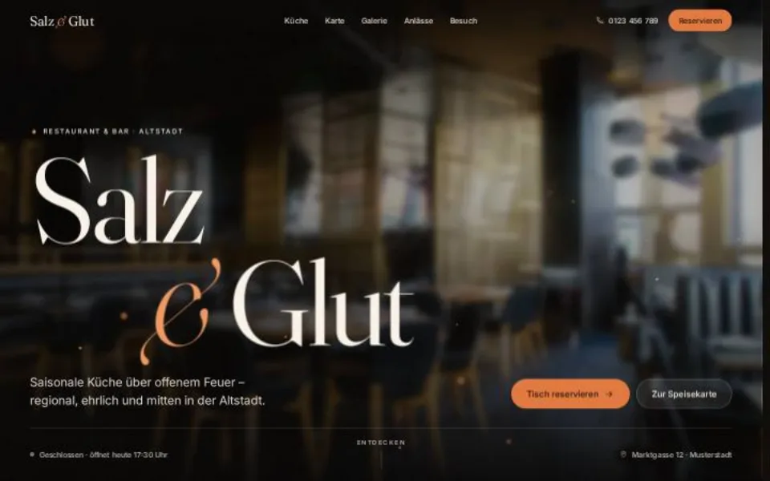
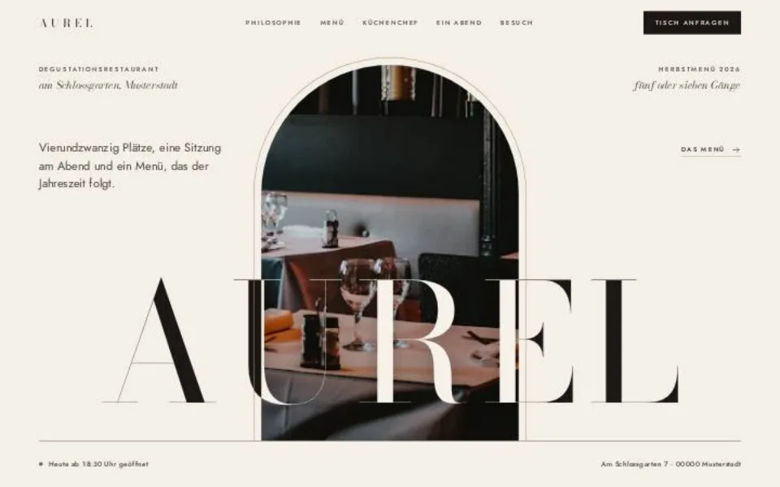
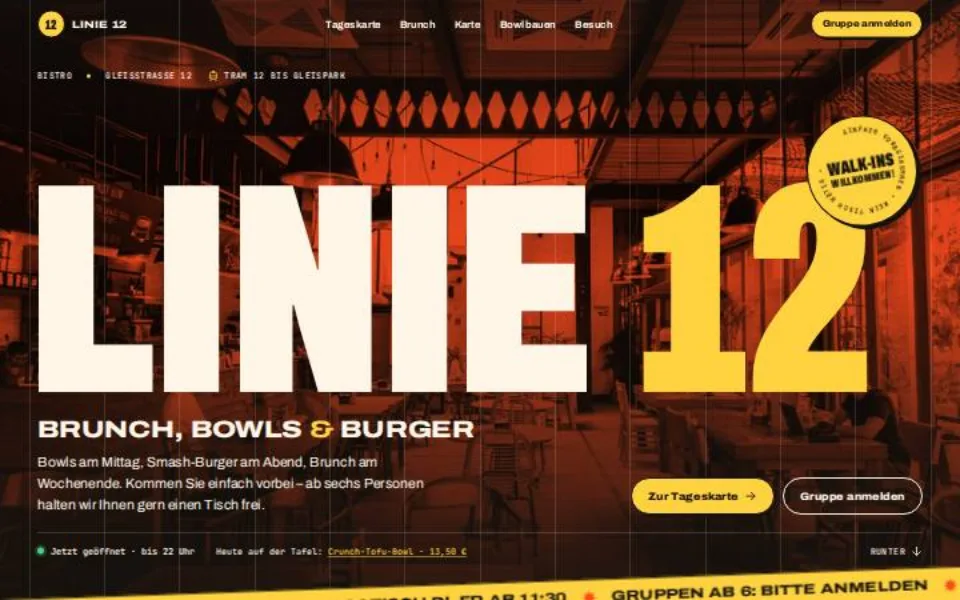
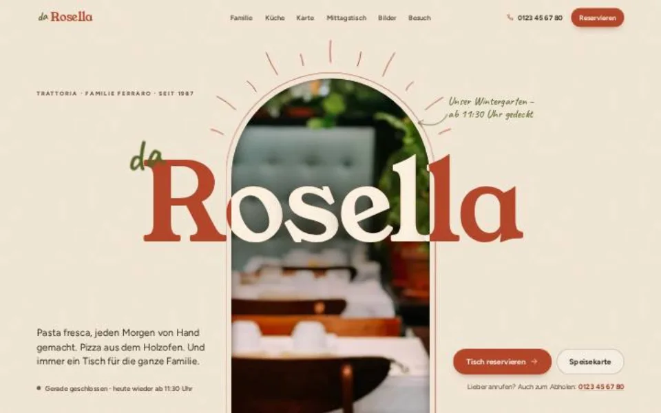

Case Study 06 / 30 · Gastronomie & Hotel
Salz & Glut
Restaurant-Vorlage mit Reservierung, Live-Öffnungsstatus, drei Farbstilen und sechs Varianten mit Jury.


Laut Jury: Lädt das Skript nicht, bleiben Inhalte außerhalb des Heros unsichtbar; bei niedrigen Fenstern und Handy quer stößt der Titel an die Navigation; in den ersten etwa 0,6 s ist der Hero schwarz; bei 320 px Breite ragen die Karten-Tabs 8 px über den Rand. Safari und echte Geräte sind nicht getestet. Alle Fotos stammen von Unsplash.
Ausgangslage
Salz & Glut ist ein erfundenes Restaurant mit Bar in der Altstadt von Musterstadt, gekocht wird über Buchenholzglut. Gäste wollen die Karte sehen, wissen, ob gerade geöffnet ist, und einen Tisch reservieren. Die Demo ist als Vorlage gebaut: Texte, Preise und Bewertungen sind Beispiele, und drei Stile (Glut, Salon, Terrasse) lassen sich per Schalter oder ?stil= wechseln.
Idee
Beim Laden steht das Foto des Gastraums erst groß und scharf da, dann rückt es nach hinten (kleiner, dunkler, weicher) und die Schrift kommt nach vorn; beim Scrollen schiebt sich der nächste Abschnitt wie ein Blatt darüber. Der Stil Glut setzt auf Braunschwarz mit Glut-Orange, Fraunces für Überschriften und Inter im Text; Salon (Cormorant Garamond, Weinrot auf Creme) und Terrasse (Grün) zeigen, wie dieselbe Seite anders wirkt.
Was die Seite kann
- ReservierungPersonen, Datum aus den nächsten drei Wochen mit gesperrten Ruhetagen, freie Uhrzeiten aus den Öffnungszeiten, Prüfung direkt am Feld.
- Öffnungsstatus„Jetzt geöffnet · bis 23:00 Uhr“ aus der Zeitentabelle in der Zeitzone des Restaurants, heutiger Tag markiert, Lageplan ohne Google-Einbettung.
- SpeisekarteTabs mit gleitender Markierung, am Desktop eine Foto-Vorschau neben dem Mauszeiger.
- Signature-GerichteAm Desktop bleibt die Sektion stehen und die Karten fahren beim Scrollen seitlich durch, auf dem Handy wischt man.
- Galerie und StimmenBilder öffnen sich groß aus dem Vorschaubild heraus, Zitate zum Durchblättern, beides mit Pfeiltasten und Wischen.
- Anlässe und Handy-LeistePrivate Dining, Chef's Table und Gutscheine, „Anfragen“ trägt den Anlass ins Formular ein; unten eine feste Leiste mit Anrufen und Tisch reservieren.
Eine Seite, 6 Varianten, zwei Jurys
Zur fertigen Seite sind 3 weitere Einstiege (gleiche Seite, anderer Hero) und 3 komplett eigene Designs entstanden, unabhängig voneinander gebaut. Danach hat je Gruppe eine Jury alle Seiten im Browser geöffnet, getestet und mit bis zu 100 Punkten bewertet. Die Punkte stehen an jeder Variante, bekannte Schwächen sind nicht wegretuschiert.
-

Hero-Variante Durchblick Am Start steht der Name fast bildschirmfüllend auf Schwarz, und nur durch die Buchstaben sieht man den Gastraum wie durch Fenster. Dann schrumpfen die Wörter an ihren Platz, das Foto wächst aus den Buchstaben zum Hintergrund und die Schrift füllt sich hell; wegen mix-blend-mode noch nicht in Safari geprüft. 84 / 100 JuryÖffnen -

Hero-Variante Kino Cinemascope-Eröffnung: Aus einem Lichtspalt öffnet sich ein schmaler Streifen mit Szenenzeile, dann gehen die Balken zum Vollbild auf, die Schärfe wandert vom Bild auf die Schrift und ein Glutschimmer läuft über die Buchstaben. Laut Jury bricht die Variante den Wort-für-Wort-Effekt im Abschnitt Küche. 73 / 100 JuryÖffnen -

Hero-Variante Tiefe Der Hero als Raum mit Tiefe: Das Foto fährt nach hinten und kippt gerade, der Name landet von vorn auf der Schärfeebene, Glutfunken steigen in drei Tiefen auf und die Ebenen federn der Maus nach. Laut Jury kosten die Funken dauerhaft Bildrate. 71 / 100 JuryÖffnen -

Eigenes Design Aurel Degustationsrestaurant in reduziertem Luxus: Elfenbeinpapier, Bodoni Moda und Jost, ein Bogen als wiederkehrendes Motiv, in den sich das Hero-Foto wie im Passepartout zurückzieht. Dazu ein Menü-Konfigurator (5 oder 7 Gänge, klassisch oder vegetarisch, Begleitung) mit Summe pro Person und eine Reservierung mit Stornobedingungen. 84.8 / 100 JuryÖffnen -

Eigenes Design Linie 12 Urbanes Bistro an der Tram-Haltestelle im Siebdruck-Plakatstil: schmale fette Archivo, Monospace für Preise und Bon, Tomatenrot, Eigelb und Tinte, das Hero-Foto als Duotone mit Druckstreifen. Mit Tageskarte, Bowl-Baukasten mit live rechnendem Bon und Gruppenanfrage. 83.8 / 100 JuryÖffnen -

Eigenes Design Trattoria da Rosella Familien-Trattoria in Terrakotta, Creme und Olivgrün: Das Foto zieht sich in einen Torbogen zurück, der Name kommt wie ein Wandschild nach vorn. Speisekarte als Papier auf Karo-Tischdecke, Kreidetafel mit Mittagstisch und eine Galerie aus Polaroids an der Wäscheleine, die beim Scrollen pendeln. 78.5 / 100 JuryÖffnen
Dein Betrieb
So eine Seite für dich?
Schreib mir kurz, was du anbietest und was deine Website leisten soll. Du bekommst eine ehrliche Einschätzung, was sie kostet und was sie dir bringen kann.
Projekt anfragen